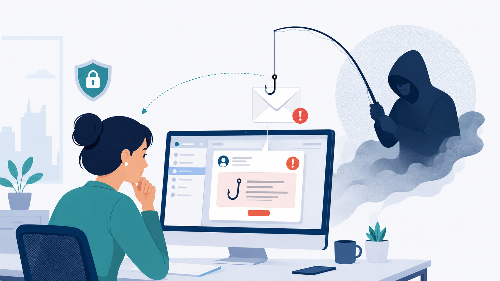
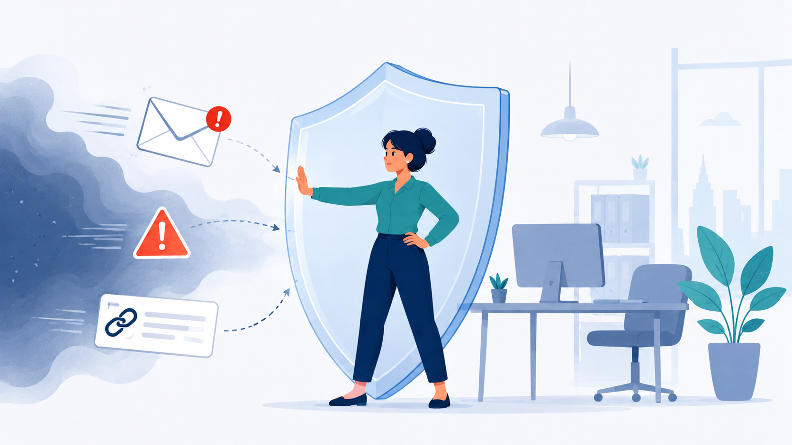
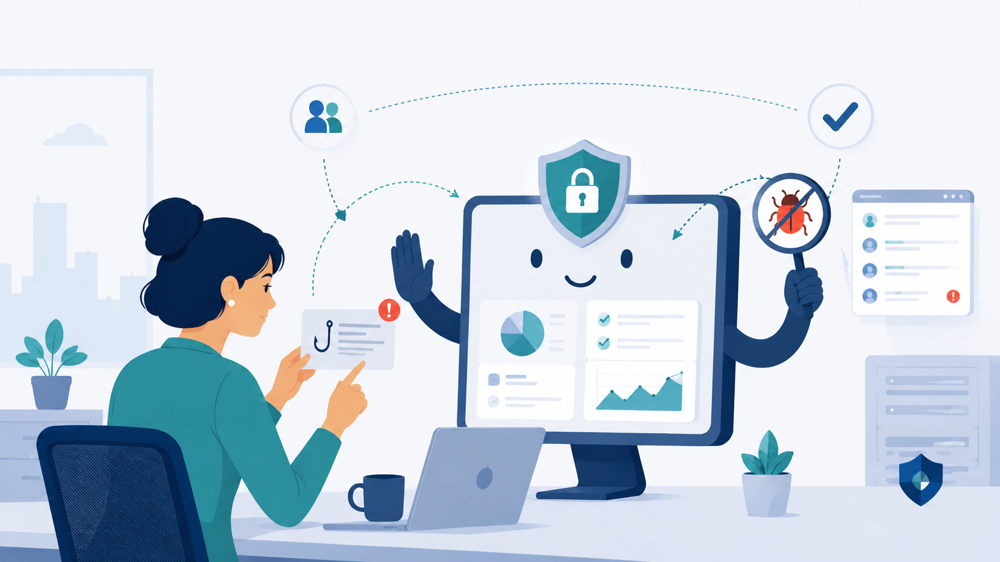

El firewall más importante de una empresa no siempre está en el ordenador
¿Alguna vez has recibido un correo que parecía urgente, con un enlace para cambiar la contraseña, revisar una factura o confirmar una entrega? A simple vista puede parecer un mensaje más. Pero, para un atacante, ese pequeño clic puede ser la puerta de entrada a toda una empresa.

Los ataques ya no siempre empiezan con una máquina
Cuando pensamos en ciberseguridad, solemos imaginar antivirus, firewalls, servidores, contraseñas imposibles o equipos de seguridad vigilando pantallas llenas de alertas. Todo eso existe y es necesario. Sin embargo, muchos ataques no empiezan intentando romper una máquina, sino intentando convencer a una persona.
Los ciberdelincuentes saben que engañar a alguien puede ser más fácil que superar una defensa técnica. Por ejemplo, pueden enviar un correo que imita a Microsoft, al banco, a un proveedor o incluso a un compañero de trabajo. El objetivo no siempre es instalar un virus de forma directa. A veces basta con conseguir una contraseña, que alguien descargue un archivo o que autorice una acción sin darse cuenta.
El informe Verizon DBIR 2025 señala que el componente humano aparece en torno al 60 % de las brechas de seguridad analizadas, incluyendo errores, manipulación, uso indebido o ataques como el phishing. Además, el abuso de credenciales fue uno de los principales vectores iniciales, con un 22 % de los casos, y el phishing apareció como vía de entrada en un 16 %.
¿Qué es un “firewall humano”?
Un firewall tradicional es una barrera que controla qué entra y qué sale de una red. Dicho de forma sencilla, funciona como un portero: deja pasar lo autorizado y bloquea lo sospechoso.
Un firewall humano es la misma idea, pero aplicada a las personas. No significa que los empleados tengan que ser expertos en ciberseguridad. Significa que deben saber detectar señales básicas de peligro: un correo extraño, una petición urgente fuera de lo habitual, un enlace sospechoso, una llamada que pide información confidencial o una descarga que no esperaban.

Imaginemos una empresa como un edificio. Puede tener puertas blindadas, cámaras y alarmas. Pero si alguien convence a un empleado para que le abra la puerta “solo un momento”, todo ese sistema pierde fuerza. En el mundo digital ocurre algo parecido: la tecnología protege, pero las personas también deciden.
El phishing: cuando el ataque parece cotidiano
Uno de los ejemplos más conocidos es el phishing, que consiste en suplantar a una entidad o persona de confianza para engañar al usuario. No hace falta que el mensaje esté lleno de errores ortográficos como hace años. Hoy puede estar bien escrito, tener logotipos reales y usar un tono muy parecido al de una empresa legítima.
Algunos mensajes juegan con la prisa: “tu cuenta será bloqueada en 24 horas”. Otros juegan con la curiosidad: “consulta el documento compartido”. También pueden aprovechar rutinas normales de trabajo: facturas, reuniones, plataformas de almacenamiento, nóminas o avisos de paquetería.
ENISA, la Agencia de la Unión Europea para la Ciberseguridad, señala que las técnicas de ingeniería social se usan con frecuencia para conseguir acceso inicial y que el phishing sigue siendo un vector muy relevante en campañas de fraude y suplantación.
Concienciar no es dar una charla al año
Muchas empresas cometen un error: pensar que la concienciación consiste en enviar una presentación una vez al año y pedir a todos que la lean. Eso puede servir como punto de partida, pero no cambia hábitos por sí solo.
La formación útil debe ser continua, práctica y cercana al día a día. Es más eficaz enseñar con ejemplos reales que con teoría abstracta. Por ejemplo: mostrar cómo se revisa el remitente de un correo, cómo identificar un enlace falso, qué hacer si se ha pulsado por error o cómo reportar un mensaje sospechoso al equipo de seguridad.
La investigación académica sobre mitigación del phishing insiste en que las medidas técnicas deben combinarse con educación, formación y pautas claras para usuarios y organizaciones. Una revisión sistemática publicada en Computers & Security analizó 248 artículos sobre estrategias contra el phishing y destaca la importancia de combinar tecnología, buenas prácticas y preparación del usuario.
El objetivo no es culpar al empleado
Hablar de “factor humano” no debería servir para señalar culpables. Cualquier persona puede caer en un engaño bien diseñado, especialmente si está cansada, tiene prisa o recibe decenas de correos al día.
Por eso, una cultura de ciberseguridad sana no se basa en el miedo, sino en la confianza. Si un empleado piensa que será castigado por avisar de un error, quizá tarde más en comunicarlo. Y en ciberseguridad, el tiempo importa mucho. Avisar rápido puede evitar que un incidente pequeño se convierta en un problema grave.
Una buena empresa no espera que todos sean expertos. Les da herramientas, canales sencillos para reportar sospechas y mensajes claros: “si dudas, pregunta”; “si has hecho clic, avisa”; “reportar a tiempo ayuda a todos”.
Tecnología y personas: no es una competición
El firewall humano no sustituye a las defensas técnicas. Una empresa sigue necesitando filtros de correo, autenticación multifactor, protección del puesto de trabajo, copias de seguridad, monitorización y respuesta ante incidentes.

Pero la tecnología no lo ve todo. Puede bloquear muchos correos maliciosos, pero alguno puede llegar. Puede detectar comportamientos sospechosos, pero quizá el primer aviso venga de una persona que dice: “este correo no me encaja”. Esa alerta puede ser tan valiosa como una herramienta avanzada.
La ciberseguridad funciona mejor cuando las personas y la tecnología se refuerzan mutuamente. El empleado no es el eslabón débil por defecto; puede ser la primera línea de defensa.
Conclusión: antes de hacer clic, piensa diez segundos
En una empresa, proteger la información no es solo tarea del departamento de ciberseguridad. Cada empleado que duda antes de abrir un enlace, que reporta un correo sospechoso o que pregunta antes de compartir información sensible está ayudando a proteger a toda la organización.
El firewall humano empieza con una idea sencilla: no hace falta saber programar ni entender cómo funciona un ataque avanzado para contribuir a la seguridad. A veces, basta con parar diez segundos y hacerse tres preguntas: ¿esperaba este mensaje?, ¿quién me lo está pidiendo?, ¿qué puede pasar si hago clic?
En ciberseguridad, esos diez segundos pueden valer más que muchas herramientas.
Fuentes consultadas
- Verizon, Data Breach Investigations Report 2025.
- ENISA, informes sobre amenazas e ingeniería social.